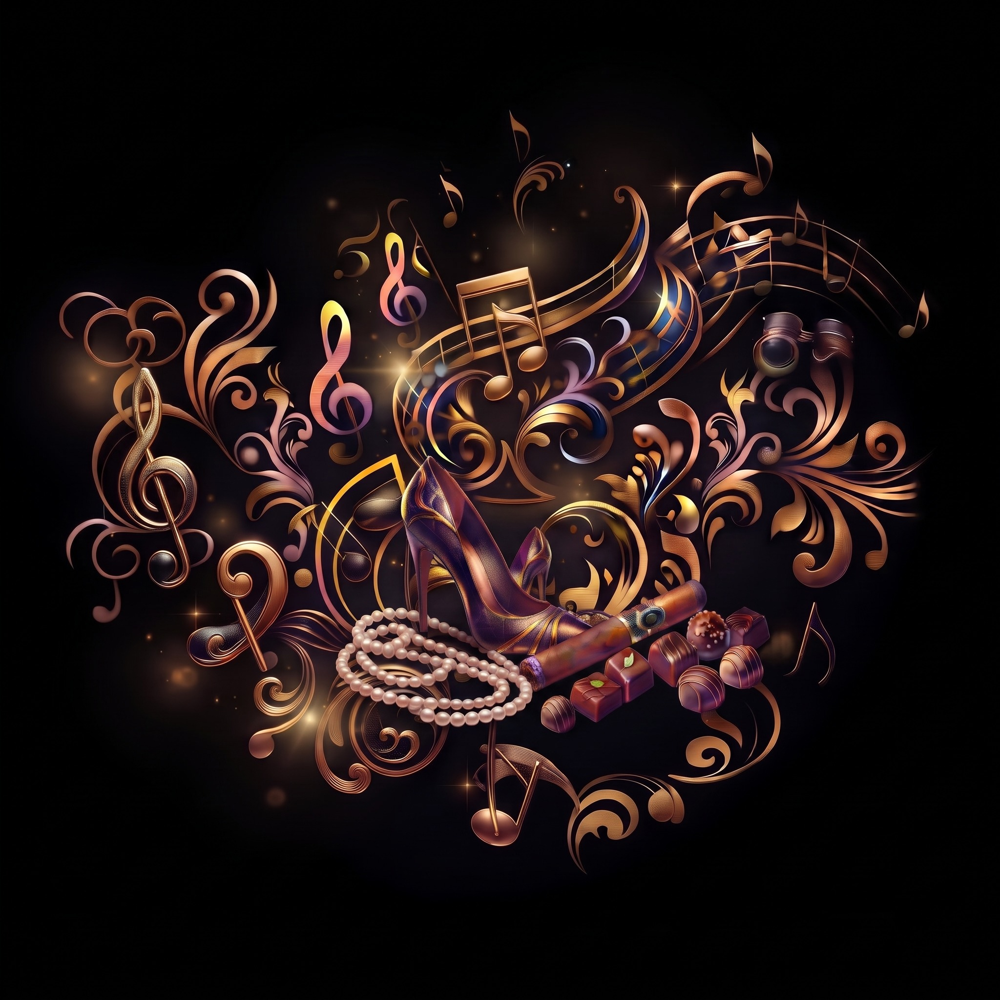

Varför ska man lyssna på opera?

Den vanligaste frågan när man nämner opera är nästan alltid:
– Vad handlar den om?
En rimlig fråga. Men också lite fel fråga. Visst har operor en handling. Människor blir kära, bedrar varandra, klär ut sig, gifter sig med fel person, hugger ihjäl varandra, förgiftar sig, kastar sig från borgmurar och dör av tuberkulos. Ibland hinner de med förvånansvärt mycket under en och samma kväll. Men om det framför allt är intrigen du är ute efter finns det effektivare underhållning. Till och med en tv-serie som gått i 72 säsonger har ofta bättre driv. Ändå är det bra att känna till handlingen. Jag återkommer till varför.
I opera är handlingen ofta ramen som håller allting samman – ungefär som snöret i ett pärlhalsband. Man behöver snöret, men det är knappast därför man köper halsbandet. Det är pärlorna man vill åt. Och pärlorna är känslorna. Det här gäller särskilt den klassiska operatraditionen hos tonsättare som Mozart, Rossini, Donizetti, Verdi och Puccini. Alla operor fungerar inte på exakt samma sätt, men hos dessa kompositörer blir principen särskilt tydlig.
Först måste förstås något hända. Någon får höra att hans hustru är otrogen. Någon ska dra ut i krig. Två ungdomar från rivaliserande familjer möts en sommarkväll. Och sedan händer något märkligt. Någon ljuger, någon avslöjas, någon blir svartsjuk, någon förälskar sig, någon inser att allt är förlorat. Tiden stannar. Då kommer arian – ett större sångnummer där en människa får stanna kvar i just den känsla hon befinner sig i och låta musiken förstora den.
I Puccinis La Bohème träffar den fattige poeten Rodolfo den blyga sömmerskan Mimì. De letar efter en borttappad nyckel i mörkret, deras händer möts – och plötsligt har något så trivialt blivit början på en kärlekshistoria. Men Mimì är dödligt sjuk och Rodolfo är för fattig för att kunna ge henne den trygghet och vård hon behöver. I Mozarts Trollflöjten kräver Nattens drottning att hennes dotter ska mörda Sarastro och hennes raseri exploderar i halsbrytande koloraturer där rösten nästan förvandlas till ett vapen. I Verdis Otello hör vi svartsjukan steg för steg äta upp en människa. Och i Donizettis Lucia di Lammermoor förvandlas ett psykiskt sammanbrott till en märkligt vacker galenskapsscen där rösten tycks lämna verkligheten.
Men opera är förstås inte bara död, vansinne och mord. Den kan också vara ren glädje. I Mozarts Figaros bröllop springer Cherubino omkring och är förälskad i ungefär alla kvinnor han ser. Han fryser, brinner, suckar och begriper ingenting. Det är puberteten, satt till musik. Och i Trollflöjten har vi Papageno, som inte är särskilt intresserad av visdom, makt eller högre andliga ideal. Han vill mest ha något gott att äta, något gott att dricka och någon att älska. När han till sist hittar sin Papagena spricker allting upp i en jublande duett om kärlek, barn och en högst jordnära framtid. Det är lycka utan krusiduller – och Mozart gör den fullkomligt oemotståndlig. Och ibland blir allt enormt. Hos Verdi kan scenen fyllas av kör, trumpeter, soldater, präster och processioner. Hos Mozart kan flera människor sjunga samtidigt och känna helt olika saker: en är rasande, en annan förskräckt, en tredje förälskad och en fjärde försöker febrilt dölja vad han just har gjort. Det som i verkligheten skulle vara ett kaotiskt gräl blir plötsligt perfekt ordnad musik.
Och det är här vi kommer tillbaka till handlingen. För det är faktiskt klokt att känna till den i förväg. Då slipper du sitta under föreställningen och försöka reda ut vem som är gift med vem, varför någon plötsligt är utklädd till soldat och varför mannen med svärdet är så förbannad på tenoren. Du vet redan vad som händer. Då kan du i stället lyssna på vad människorna känner. Det är där operan finns. Mozart, Rossini, Donizetti, Verdi, Puccini och de andra tar kärlek, vrede, sorg, svartsjuka, rädsla, längtan och begär och skruvar upp dem tills känslan nästan blir större än människan som bär den.
Så nästa gång någon frågar:
– Vad handlar operan om?
kan svaret gärna vara:
– Det spelar mindre roll. Poängen är vad den får oss att känna.